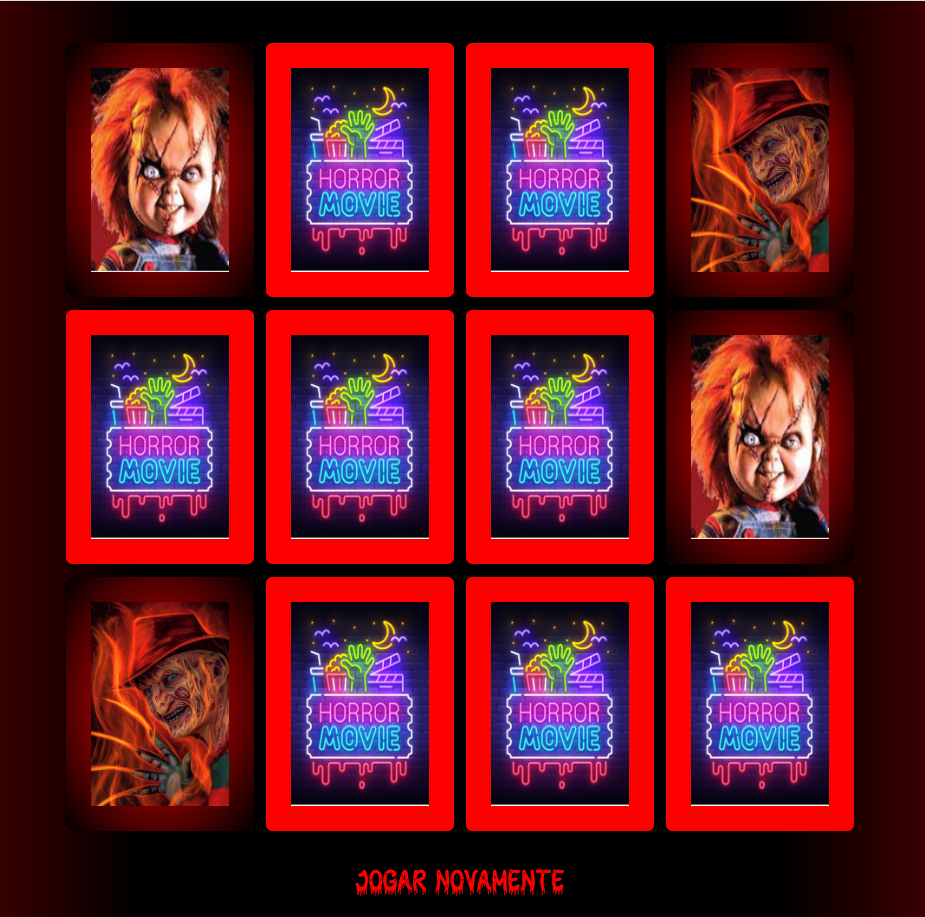
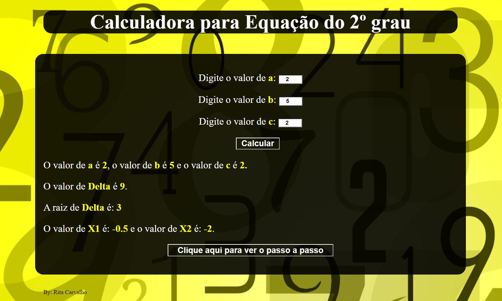

Jogo da memória
Este jogo foi desenvolvido em JavaScript Vanilha, com tema de filmes de terror.
Ele tem validações para quando o jogador erra as cartas virarem de volta, e quando
acerta as cartas ficarem amostra até o fim do jogo. Quando clica no botão jogar novamente,
o jogo é embaralhado aleatóriamente, para que as cartas não fiquem na mesma posição.
Para o desenvolvimento desse jogo, foi utilizado também CSS flex-box.

Calculadora de equação do segundo grau

Esta calculadora foi desenvolvida em JavaScript Vanilha. Ela faz o cálculo da equação
do segundo grau, faz o cálculo da Delta, de Bhaskara, das duas raízes, mostra o passo
a passo de como a conta foi feita e no final faz uma validação para ver se a equação
está correta.
Jogo da velha
Este jogo foi desenvolvido em JavaScript Vanilha, com validação de ganhador por
tipo de jogador, vez do jogador dinâmica, e validação quando o jogo acaba sem
nenhum ganhador, para o desenvovimento desse jogo foi utilizado também CSS3 e HTML5.


HOME